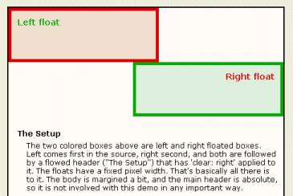

Left float
Right float
The Setup
The two colored boxes above are left and right floated boxes. Left comes first in the source, right second, and both are followed by a flowed header ("The Setup") that has 'clear: right' applied to it. The floats have a fixed pixel width. That's basically all there is to it. The body is margined a bit, and the main header is absolute, so it is not involved with this demo in any important way.
So you're asking "what's the big deal?". Well, when opposing floats like this cannot both fit side by side in a container, the second one is forced below the first. In this case the green right float would go below the red left float (but still remain floated to the right). Since the h2 element above ("The Setup") is cleared for right floats, it should appear below the right float.
The Bug
In Geckos previous to Firefox 1.0, that does not happen. Instead, if the window is narrowed enough to cause a float wrap, the header (and the following flowed elements) begin up alongside the left float! In fact, the content is broken into two sections.
So go ahead, narrow that window!
Below are screenshots, first in Mozilla (Gecko based browsers), and next in a non-Gecko browser. Remember that this bug is fixed, starting from Firefox 1.0.
Gecko
Explorer
Is There Symmetry?
Sure is. Below is the same demo, except that the source order of the two floats is reversed, and the following header is cleared for left floats.
Right float
Left float
An Interesting Point
This Mozbug does not occur if the following cleared element has 'clear: both'. Only if the trailing float is followed by an element that is cleared in the same direction as that float, will the Mozbug occur. I'll grant you that this situation is slightly unlikely, but gosh darn it, I want full float control! Mozilla is such a fine CSS browser that even this slight flaw takes on horrendous proportions.
What about the other browsers?
Opera has no problem with this feat. Amazingly, even Internet Explorer does well, altho the container (#content) must have an assigned dimension like height or width to avoid major buggyness in both IE5.5 and IE6 for windows. Pretty typical for IE.
Fixes?
Uh, yah. Well, moving right along...
Seriously, There is no way to correct the problem from the coding side. However...
Flash! It now appears (June 2004) that the latest Mozilla build does not have this bug. Woohoo! It took a while, but as a bonus they also fixed the problem where a cleared element not directly below a float fails to clear that float, which caused great difficulty when laying out the Piefecta demo. Hmmm, could there possibly be a connection?
To see how a Mozbug gets fixed, take a look at the bugzilla page on this issue. The fix, while now in the Mozilla builds, has been slow to be applied to the Firefox "branch". There does seem to be some action going on for Firefox, so eventually the fix will become universal.
Flash! It's November 10th of 2004, and Firefox 1.0 has just been released. A few days ago the fix was not in Firefox RC2, the final beta version, but the first official Firefox release does contain the fix! Wow. This incorrect Gecko behavior was first noticed over 30 months ago, and we never dreamed it would be this close a shave, but all's well that ends well. Woohoo again! Open Source really rocks. Bill Gates, are you taking notes?
So, this means that while the problems are still around, it's just a matter of a year or two until they become very minor and can be ignored. Now if only IE bugs would go away that fast...
Special Thanks to Douglas Livingstone for discovering this Mozbug and pointing it out to me, and Frank Wein for pointing out the first instance of a fixed Moz build.
Holly 'n John
Contact Holly
Contact John
©positioniseverything
Last updated: December 28, 2005
Created June 22, 2003